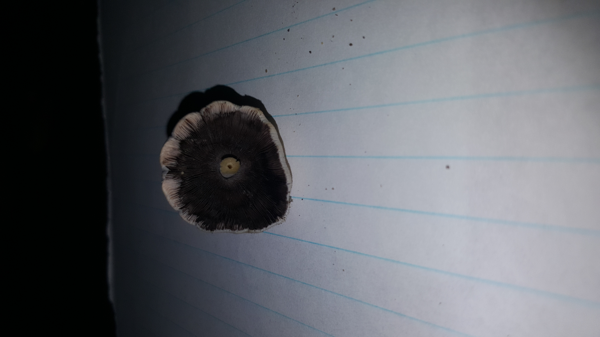
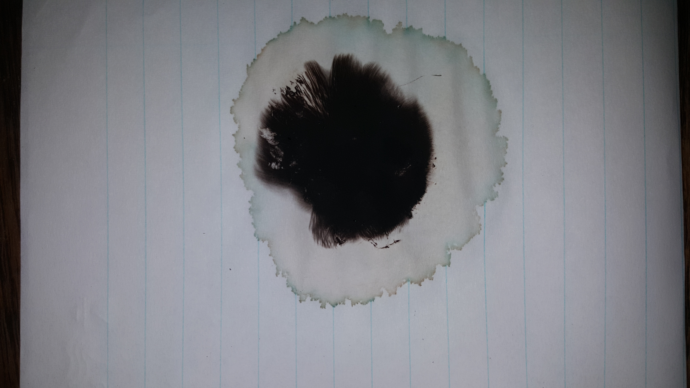
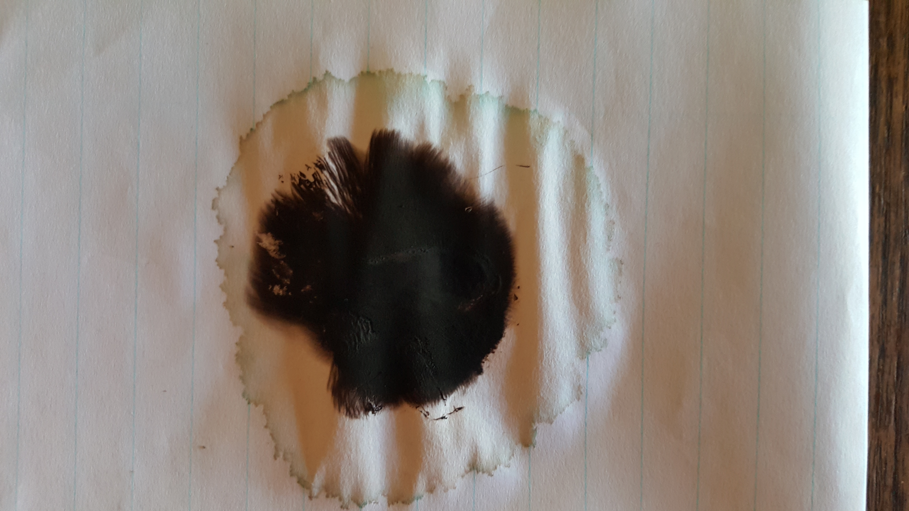
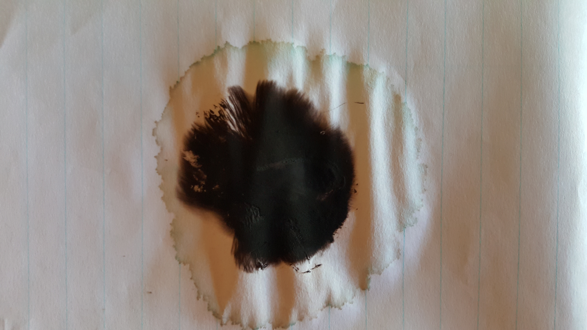
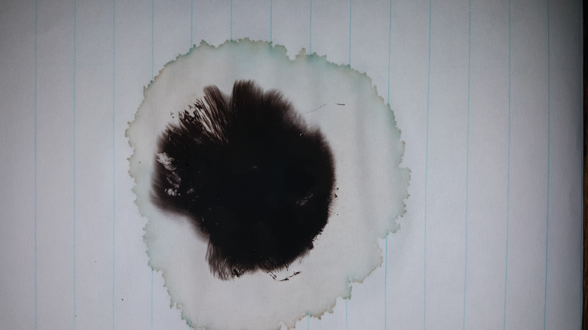
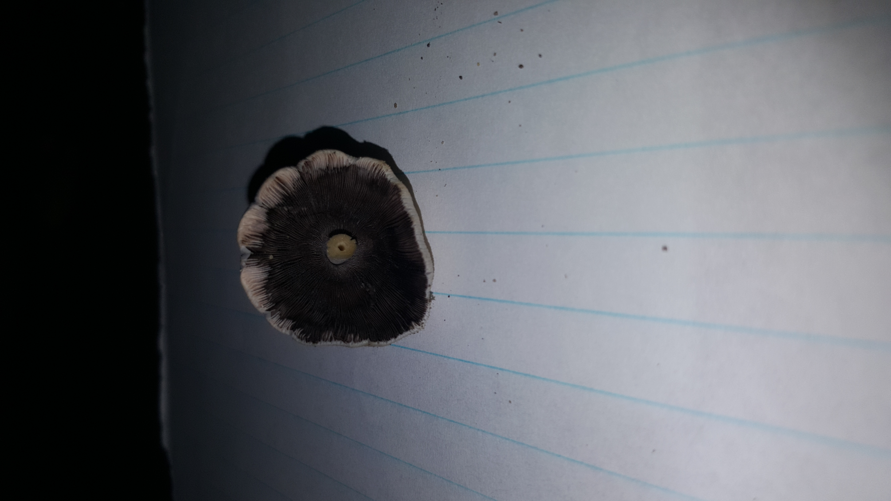
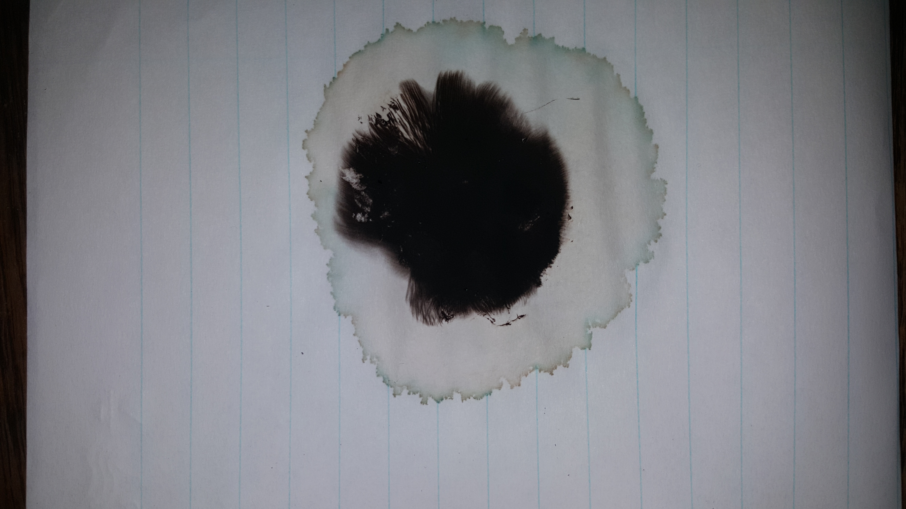
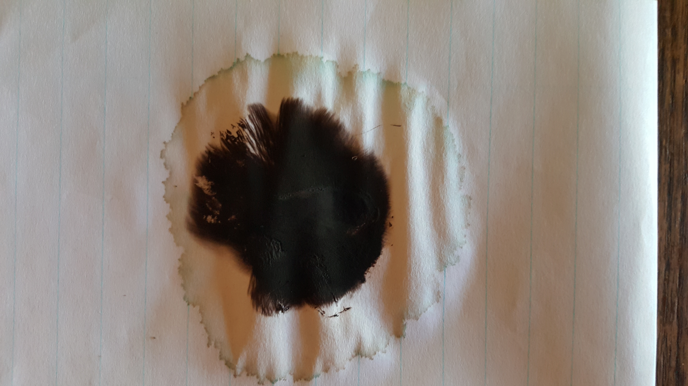
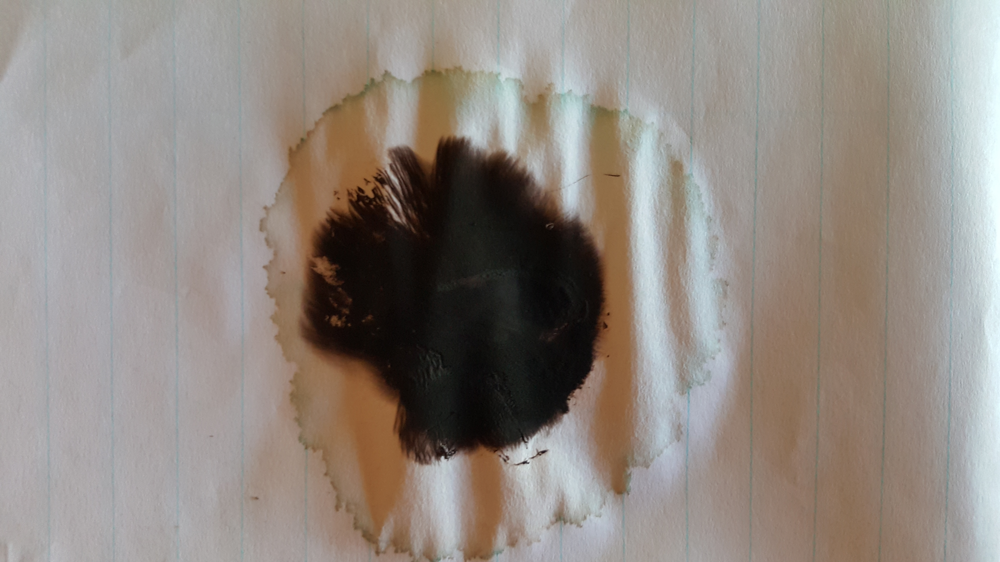
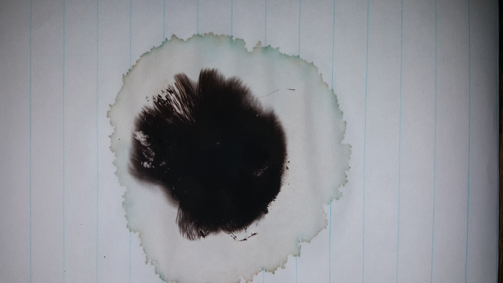

This find of Coprinellus micaceus is thanks to my dog and his steadfast commitment to his daily walk, and irrigated lawns. I would have never been aware of this colony if 🕠was put off by cloudy and cold weather. We passed the same spot on a later night with similar weather with an even bigger flush having sprouted up from the grass.


 








